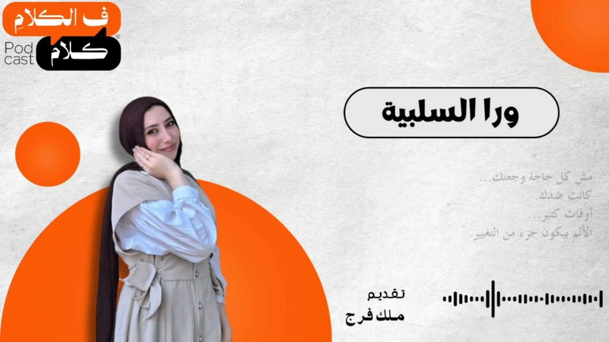

← الحلقات
عن الوجع والتغيير · الحلقة ٢

ورا السلبية
١١ يوليو ٢٠٢٦ · ٣:٤٧ · #منحة #عن_الوجع_والتغيير
عمرك فكرت إن أسوأ حاجة حصلتلك...
ممكن تكون أحسن حاجة حصلتلك، بس إنت لسه مش شايف ده؟
في الحلقة دي من "ف الكلامِ كلام" بنتكلم عن معنى الألم، والدروس اللي بتسيبها التجارب الصعبة، وإزاي أوقات كتير اللي بنشوفه محنة بيكون وراه منحة أكبر.
شاركني رأيك بعد ما تسمع الحلقة.
اللي بنشوفه محنة بيكون وراه منحة أكبر.
نص الحلقةاقرا النص
ما يمكن الحاجة اللي كسرتك هي اللي أنقذتك. عمرك فكرت إن أسوأ حاجة حصلتلك ممكن تكون أحسن حاجة حصلتلك بس إنت لسه مش شايف ده؟ يمكن. إحنا متعودين إن أي حاجة سلبية بتحصلنا نحطها في خانة ضدنا على طول.
حاجة تزعلنا أو تكسرنا أو توجعنا يبقى خلاص دي حاجة وحشةوبس full stop علي كدا. وخلينا نبقى صريحين محدش فينا بيحب الوجع ولا حد بيتمنى يعدي بحاجات صعبة. بس يمكن الحقيقة أعمق من كده بكتير ويمكن الـ concept كله محتاج نفهمه بشكل مختلف شوية إن مش كل حاجة حصلتلك كانت ضدك ما يمكن كانت بتجهزك.
إحنا دايمًا بنشوف اللحظة اللي إحنا فيها بس بنشوف الموقف وهو بيحصل ونحكم عليه فورًا لكن مش بنشوف الصورة كلها ومش بنفهم ليه ده حصل دلوقتي بالذات. الحقيقة إن دايمًا نظرتنا محدودة.
لأن بعد ما بنعدي الموقف ونبص ورا بنبدأ نفهم واحدة واحدة بنقول يمكن الحاجة دي كانت صعبة بس هي اللي خلتني أبقى أقوى هي اللي فهمتني نفسي هي اللي خلتني أختار أحسن بعد كده.
with more awareness الحقيقة اللي مش دايمًا بنحب نعترف بيها إن كل حاجة سلبية حصلتلك سابت جواك درس. حتى لو إنت ماكنتش عايزه وقتها بس كنت محتاجه جدًا even لو انت مش شايف ده دلوقتي.
يمكن موقف وجعك بس علمك متثقش في أي حد بسهولة. ويمكن تجربة فشلت فيها لكن خلتك تفهم نفسك أكتر ويمكن علاقة انتهت بس رجعتك لنفسك من تاني. فالفكرة مش في إن الحاجة كانت حلوة الفكرة ببساطة إنها كانت مفيدة.
بس ده مش معناه إننا لازم نكون أقوياء طول الوقت عادي جدًا تتعب وتزعل المهم إنك متقفش عند ده. أنا شخصيًا في حاجات كنت شايفاها نهاية الدنيا. ودلوقتي أنا بحمد ربنا انها حصلت لأن لولاها انا مكنتش بقيت الشخص اللي أنا عليه دلوقتي.
وخليني أكلمك من منظور تاني. إن إحنا كبشر بنشوف جزء صغير جدًا من الصورة. لكن ربنا شايف الصورة كلها شايف إيه اللي ينفعك وشايف إيه اللي ممكن يأذيك وعمره ما بيختار لك حاجة وحشة ابدا حتى لو إنت شايفها كده دلوقتي.
يمكن إحنا مش فاهمين دلوقتي بس ربنا دايمًا بيختار لنا الأنسب. يمكن الحاجة دي كانت مؤلمة. بس بتبعدك عن حاجة أسوأ أو بتقربك من حاجة أحسن أو بتجهزك لمرحلة إنت لسه موصلتلهاش.
وربنا شايف صبرك وتعبك ومش بيضيع حاجة كل حاجة ليها معنى حتى لو إنت لسه مش فاهمه. ومش معنى إنك اتأذيت إنك خسرت ومش معنى إن الحاجة دي كانت صعبة إنها كانت غلط أوقات كتير الألم بيبقى جزء من التغيير.
بص لنفسك دلوقتي إنت مش نفس الشخص من سنة ولا حتى من كام شهر نضجك ووعيك وطريقة تفكيرك اتغيروا بسبب تجارب انت كنت شايفها في وقت من الأوقات سيئة. الحقيقة البسيطة إنك انت النهارده نتيجة كل حاجة مريت بيها الحلو والوحش والحاجات اللي إنت شايفها سلبية هي اللي شكلتك وخليتك أقوى وأكثر وعياً وأصدق مع نفسك.
فالمرة الجاية لما تمر بحاجة صعبة اسأل نفسك هو إيه اللي انا ممكن أتعلمه من ده بدل ما تسأل هو أنا ليه بيحصلي كدا وحاول تعمل Focus على المنحة حتى لو مستخبية جوه المحنة.
يمكن لو الحاجة دي ماكنتش حصلت ماكنتش هتبقى الشخص اللي إنت عليه دلوقتي. يمكن دلوقتي مش فاهم ويمكن شايف إن كل اللي حصل ده كان وحش بس بس صدقني هييجي وقت وتبص ورا وتفهم إن ده كان خير ليك حتى لو مكنتش شايفه وقتها.
يمكن دلوقتي مش واضح بس بعدين هتقول كان خير. كانت معاكم ملك فرج، وأشوفكم في حلقة جديدة من ف الكلامِ كلام.